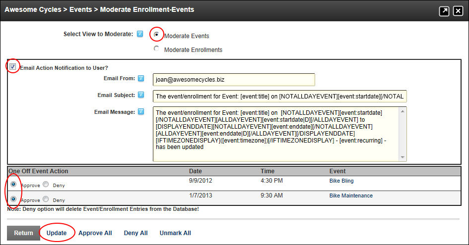

Approving Moderated Events
How to approve one or more events awaiting moderation in the Events module.
Prerequisite. Moderation must be enabled on this module (See "Configuring Moderation Settings") and the user must be granted permissions to the Moderator role. See "Setting Unique Event Permissions"
- Select
 Moderate Events from the Events module actions menu - OR - Click the Moderate Events button. This opens the Moderate Enrollment-Events page.
Moderate Events from the Events module actions menu - OR - Click the Moderate Events button. This opens the Moderate Enrollment-Events page.
- At Select View to Moderate, select Moderate Events. This displays a list of any events that are awaiting moderation
- At Email Action Notification to User?, select one of these options:
- Mark
 the check box to send email notification to the user or users who created the event(s).
the check box to send email notification to the user or users who created the event(s).
- In the Email From text box, edit the email address that will be displayed in the From field when the user receives the message. The email address of the logged in moderator will be displayed by default.
- In the Email Subject text box, edit the subject of the email.
- Optional. In the Email Message text box, edit the message of the email.
- Unmark
 the check box if you don't want to send email notification.
the check box if you don't want to send email notification.
- In the Action column, select Approve beside each event to be approved.
-
Click the OK button to confirm. This displays the message "Are You Sure You Wish To Update/Delete Item(s) (and send Email) ?"
-
Click the OK button to confirm.
Tip: Click the Unmark All link to deselect the Approve and Deny action for all events.

Approving Moderated Events